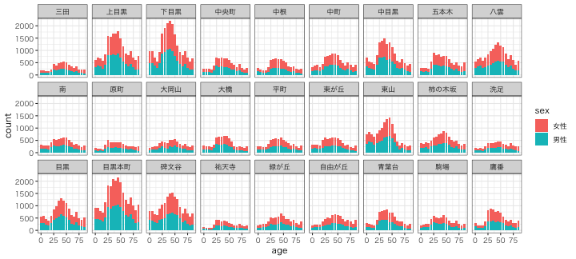
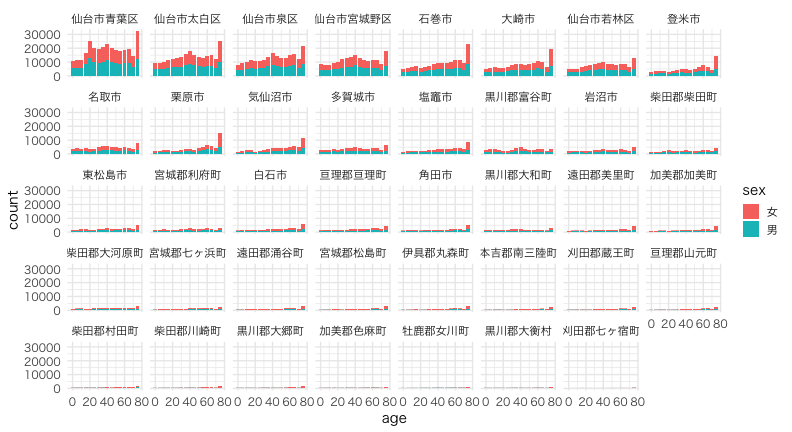

diamonds, starwars, mpg, etc. See data()町丁別・年齢別・男女別人口… の最新CSVをダウンロード、読み込み
infile = "131105_population_20211001.csv"
raw_meguro = readr::read_csv(infile)
print(raw_meguro)
都道府県コード又は市区町村コード 地域コード 都道府県名 市区町村名 調査年月日 地域名 総人口 男性 女性 0-4歳の男性 0-4歳の女性 5-9歳の男性 5-9歳の女性 10-14歳の男性 10-14歳の女性 15-19歳の男性 15-19歳の女性 20-24歳の男性 20-24歳の女性 25-29歳の男性 25-29歳の女性 30-34歳の男性 30-34歳の女性 35-39歳の男性 35-39歳の女性 40-44歳の男性 40-44歳の女性 45-49歳の男性 45-49歳の女性 50-54歳の男性 50-54歳の女性 55-59歳の男性 55-59歳の女性 60-64歳の男性 60-64歳の女性 65-69歳の男性 65-69歳の女性 70-74歳の男性 70-74歳の女性 75-79歳の男性 75-79歳の女性 80-84歳の男性 80-84歳の女性 85歳以上の男性 85歳以上の女性 不詳者の男性 不詳者の女性 世帯数 備考 KEY_CODE
<dbl> <dbl> <chr> <chr> <date> <chr> <dbl> <dbl> <dbl> <dbl> <dbl> <dbl> <dbl> <dbl> <dbl> <dbl> <dbl> <dbl> <dbl> <dbl> <dbl> <dbl> <dbl> <dbl> <dbl> <dbl> <dbl> <dbl> <dbl> <dbl> <dbl> <dbl> <dbl> <dbl> <dbl> <dbl> <dbl> <dbl> <dbl> <dbl> <dbl> <dbl> <dbl> <dbl> <dbl> <dbl> <dbl> <dbl> <lgl> <dbl>
1 131105 111 東京都 目黒区 2021-10-01 駒場一丁目 4095 2108 1987 69 59 76 68 76 66 68 52 167 129 226 173 221 136 172 149 184 144 177 185 146 144 111 110 74 91 76 95 110 118 57 94 48 62 50 112 0 0 2487 NA 13110001001
2 131105 112 東京都 目黒区 2021-10-01 駒場二丁目 556 270 286 5 7 10 5 10 9 18 14 18 17 26 25 18 16 21 16 18 16 19 23 19 23 16 15 18 16 7 12 16 22 13 16 10 11 8 23 0 0 332 NA 13110001002
3 131105 113 東京都 目黒区 2021-10-01 駒場三丁目 872 429 443 10 17 15 17 18 18 18 14 25 23 36 26 28 23 32 33 27 27 41 45 39 43 31 28 24 21 18 20 22 31 19 23 10 14 16 20 0 0 479 NA 13110001003
4 131105 114 東京都 目黒区 2021-10-01 駒場四丁目 1258 581 677 13 14 26 27 38 21 37 30 34 42 36 29 37 47 30 34 48 61 55 63 47 66 37 58 32 29 27 32 32 48 23 26 13 18 16 32 0 0 666 NA 13110001004
--
85 131105 364 東京都 目黒区 2021-10-01 八雲四丁目 2089 969 1120 30 34 47 44 56 54 44 44 51 44 64 57 43 60 52 66 70 104 98 110 88 101 84 82 49 56 43 56 60 65 37 50 21 38 32 55 0 0 991 NA 13110026004
86 131105 365 東京都 目黒区 2021-10-01 八雲五丁目 2851 1370 1481 73 53 79 58 81 71 59 68 78 61 74 75 82 98 96 118 128 127 102 130 112 116 103 113 83 95 60 63 69 63 30 61 31 43 30 68 0 0 1343 NA 13110026005
87 131105 371 東京都 目黒区 2021-10-01 東が丘一丁目 4476 2092 2384 105 79 112 102 118 99 111 92 104 142 116 138 125 155 150 176 179 203 187 195 173 194 148 174 112 129 94 90 98 119 69 82 45 73 46 142 0 0 2215 NA 13110027001
88 131105 372 東京都 目黒区 2021-10-01 東が丘二丁目 3114 1360 1754 65 62 66 54 59 48 40 49 88 200 140 218 119 162 108 150 99 121 112 111 90 122 97 101 80 76 53 57 40 74 42 47 35 40 27 62 0 0 1796 NA 13110027002
ggplotしたくなる形に変形。1行ずつ経過を確認しよう。
tidy_meguro = raw_meguro %>%
select("地域名", matches("の.+性$")) %>%
rename(place = 地域名) %>%
mutate(place = str_remove(place, "\\S丁目")) %>%
group_by(place) %>%
summarize(across(everything(), sum)) %>%
ungroup() %>%
pivot_longer(!place, names_to = "category", values_to = "count") %>%
separate(category, c("age", "sex"), sep = "の") %>%
mutate(age = as.integer(str_extract(age, "^\\d+"))) %>%
filter(!is.na(age)) %>%
print()
place age sex count
<chr> <int> <chr> <dbl>
1 三田 0 男性 92
2 三田 0 女性 84
3 三田 5 男性 98
4 三田 5 女性 93
--
969 鷹番 80 男性 113
970 鷹番 80 女性 182
971 鷹番 85 男性 126
972 鷹番 85 女性 276
作図してみる
ggplot(tidy_meguro) +
aes(age, count) +
geom_col(aes(fill = sex)) +
facet_wrap(vars(place), nrow = 3L) +
theme_bw(base_family = "HiraginoSans-W3") # 日本語は鬼門

文字コードが古い。列名が2行にまたがってる。数値の列に変な文字。
infile = "tblT000849C04.txt"
sjis = locale(encoding = "SJIS")
# readr::read_csv(infile, locale = sjis)
miyagi_L = readr::read_csv(infile, locale = sjis, col_select = seq(1, 7)) %>%
dplyr::slice(-1)
miyagi_R = readr::read_csv(infile, locale = sjis, col_select = -seq(1, 7), skip = 1L, na = c("-", "X"), name_repair = "minimal")
raw_miyagi = bind_cols(miyagi_L, miyagi_R) %>% print()
KEY_CODE HYOSYO CITYNAME NAME HTKSYORI HTKSAKI GASSAN 総数、年齢「不詳」含む 総数０〜４歳 総数５〜９歳 総数１０〜１４歳 総数１５〜１９歳 総数２０〜２４歳 総数２５〜２９歳 総数３０〜３４歳 総数３５〜３９歳 総数４０〜４４歳 総数４５〜４９歳 総数５０〜５４歳 総数５５〜５９歳 総数６０〜６４歳 総数６５〜６９歳 総数７０〜７４歳 総数１５歳未満 総数１５〜６４歳 総数６５歳以上 総数７５歳以上 男の総数、年齢「不詳」含む 男０〜４歳 男５〜９歳 男１０〜１４歳 男１５〜１９歳 男２０〜２４歳 男２５〜２９歳 男３０〜３４歳 男３５〜３９歳 男４０〜４４歳 男４５〜４９歳 男５０〜５４歳 男５５〜５９歳 男６０〜６４歳 男６５〜６９歳 男７０〜７４歳 男１５歳未満 男１５〜６４歳 男６５歳以上 男７５歳以上 女の総数、年齢「不詳」含む 女０〜４歳 女５〜９歳 女１０〜１４歳 女１５〜１９歳 女２０〜２４歳 女２５〜２９歳 女３０〜３４歳 女３５〜３９歳 女４０〜４４歳 女４５〜４９歳 女５０〜５４歳 女５５〜５９歳 女６０〜６４歳 女６５〜６９歳 女７０〜７４歳 女１５歳未満 女１５〜６４歳 女６５歳以上 女７５歳以上
<chr> <dbl> <chr> <chr> <dbl> <chr> <chr> <dbl> <dbl> <dbl> <dbl> <dbl> <dbl> <dbl> <dbl> <dbl> <dbl> <dbl> <dbl> <dbl> <dbl> <dbl> <dbl> <dbl> <dbl> <dbl> <dbl> <dbl> <dbl> <dbl> <dbl> <dbl> <dbl> <dbl> <dbl> <dbl> <dbl> <dbl> <dbl> <dbl> <dbl> <dbl> <dbl> <dbl> <dbl> <dbl> <dbl> <dbl> <dbl> <dbl> <dbl> <dbl> <dbl> <dbl> <dbl> <dbl> <dbl> <dbl> <dbl> <dbl> <dbl> <dbl> <dbl> <dbl> <dbl> <dbl> <dbl>
1 04101 1 仙台市青葉区 <NA> 0 <NA> <NA> 310183 11107 11396 11605 16730 25517 20314 19691 20935 23107 20324 18759 17648 18731 19288 14488 34108 201756 66000 32224 150535 5691 5819 5997 8641 13205 10180 9578 10244 11460 10204 9424 8525 8999 9058 6607 17507 100460 27716 12051 159648 5416 5577 5608 8089 12312 10134 10113 10691 11647 10120 9335 9123 9732 10230 7881 16601 101296 38284 20173
2 041010010 2 仙台市青葉区 青葉町 0 <NA> <NA> 697 22 20 21 26 50 87 58 43 41 58 30 34 49 38 30 63 476 145 77 319 11 9 9 12 23 43 32 18 14 29 14 13 20 17 14 29 218 62 31 378 11 11 12 14 27 44 26 25 27 29 16 21 29 21 16 34 258 83 46
3 041010020 2 仙台市青葉区 あけぼの町 0 <NA> <NA> 798 22 18 16 35 60 77 59 61 58 47 44 33 55 50 46 56 529 201 105 394 15 8 11 19 26 39 26 36 35 25 16 18 27 29 22 34 267 88 37 404 7 10 5 16 34 38 33 25 23 22 28 15 28 21 24 22 262 113 68
4 041010030 2 仙台市青葉区 旭ケ丘 0 <NA> <NA> 8958 245 260 258 347 824 939 771 662 731 597 505 451 414 407 322 763 6241 1780 1051 4239 139 131 139 174 335 439 357 316 361 308 251 236 198 197 142 409 2975 741 402 4719 106 129 119 173 489 500 414 346 370 289 254 215 216 210 180 354 3266 1039 649
--
5880 04606004015 3 本吉郡南三陸町 歌津字石浜 0 <NA> <NA> 242 5 9 7 7 8 6 11 11 15 17 26 18 26 21 18 21 145 76 37 122 3 5 3 4 5 2 6 5 8 12 12 8 12 15 6 11 74 37 16 120 2 4 4 3 3 4 5 6 7 5 14 10 14 6 12 10 71 39 21
5881 04606004016 3 本吉郡南三陸町 歌津字田の浦 0 <NA> <NA> 181 4 4 4 10 8 11 13 5 4 15 13 22 17 5 8 12 118 51 38 86 1 2 3 6 4 6 7 2 3 5 5 12 11 5 2 6 61 19 12 95 3 2 1 4 4 5 6 3 1 10 8 10 6 NA 6 6 57 32 26
5882 04606004017 3 本吉郡南三陸町 歌津字草木沢 0 <NA> <NA> 466 14 17 22 18 17 25 28 16 40 29 21 33 49 39 34 53 276 137 64 246 6 7 10 12 6 14 18 12 21 16 12 18 22 26 17 23 151 72 29 220 8 10 12 6 11 11 10 4 19 13 9 15 27 13 17 30 125 65 35
5883 04606004018 3 本吉郡南三陸町 歌津字伊里前 0 <NA> <NA> NA NA NA NA NA NA NA NA NA NA NA NA NA NA NA NA NA NA NA NA NA NA NA NA NA NA NA NA NA NA NA NA NA NA NA NA NA NA NA NA NA NA NA NA NA NA NA NA NA NA NA NA NA NA NA NA NA NA NA NA
まだ罠がたくさん: 列名の頭にスペース。全角数字。変な区分。
tidy_miyagi = raw_miyagi %>%
dplyr::filter(HYOSYO == 1) %>%
dplyr::select(CITYNAME, matches("[男女].+[歳上]$")) %>%
tidyr::pivot_longer(!CITYNAME, names_to = "category", values_to = "count") %>%
dplyr::mutate(category = str_trim(category)) %>%
tidyr::separate(category, c("sex", "age"), 1) %>%
dplyr::mutate(age = stringi::stri_trans_nfkc(age)) %>%
tidyr::separate(age, c("lower", "upper"), "〜", fill = "right") %>%
dplyr::mutate(lower = parse_number(lower), upper = parse_number(upper)) %>%
dplyr::filter((upper - lower) < 5 | lower == 75) %>%
dplyr::rename(age = lower) %>%
print()
CITYNAME sex age upper count
<chr> <chr> <dbl> <dbl> <dbl>
1 仙台市青葉区 男 0 4 5691
2 仙台市青葉区 男 5 9 5819
3 仙台市青葉区 男 10 14 5997
4 仙台市青葉区 男 15 19 8641
--
1245 本吉郡南三陸町 女 60 64 519
1246 本吉郡南三陸町 女 65 69 442
1247 本吉郡南三陸町 女 70 74 381
1248 本吉郡南三陸町 女 75 NA 1487
ggplot(tidy_miyagi) +
aes(age, count) +
geom_col(aes(fill = sex)) +
facet_wrap(vars(CITYNAME), ncol = 8L) +
theme_minimal(base_family = "HiraginoSans-W3", base_size = 14)

前処理大全 — 本橋智光
RユーザのためのRStudio[実践]入門 (宇宙船本) — 松村ら